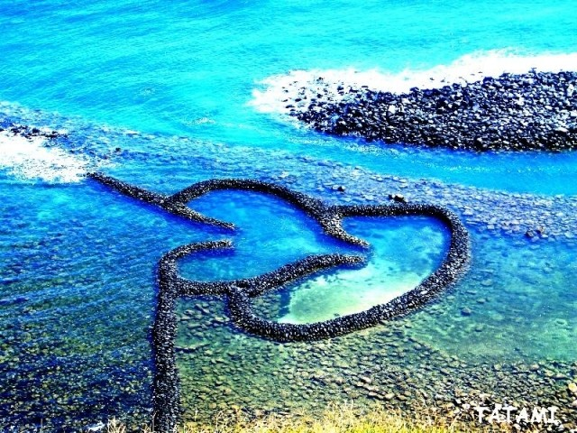
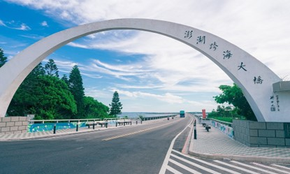
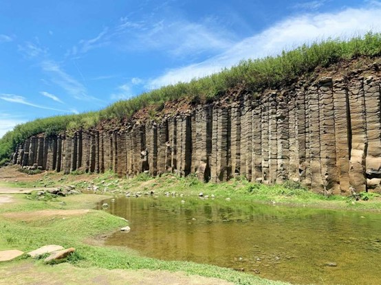
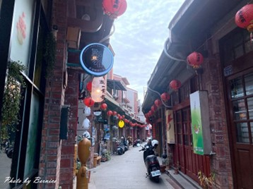
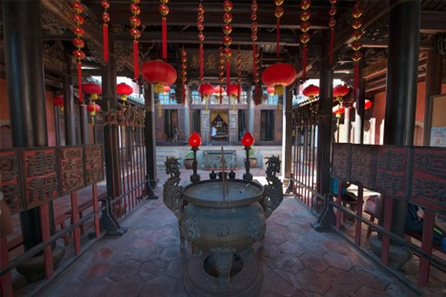
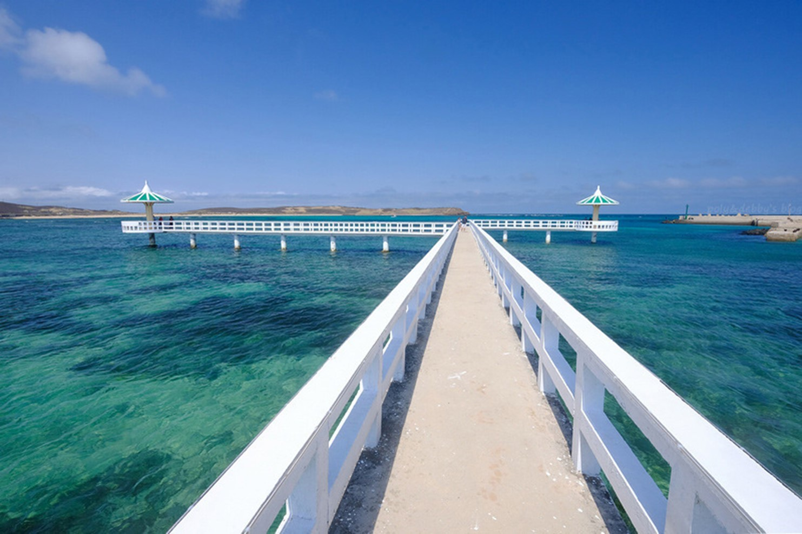
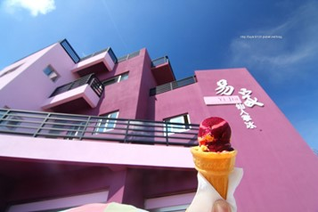
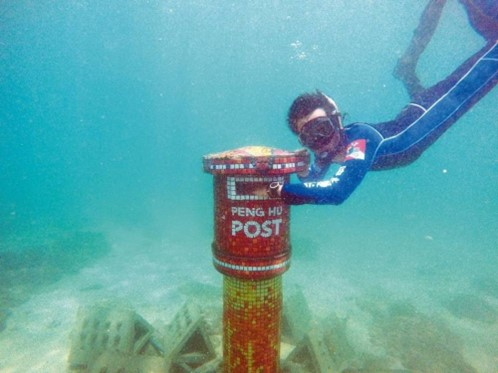

澎湖國際海上花火節
澎湖國際海上花火節於觀音亭園區施放，
美麗的煙火與得天獨厚的海灣環境和浪漫的西瀛虹橋相得益彰，
遊客可以近距離欣賞煙火，高空煙火在海上夜空中震撼演出，
仿佛就在眼前觸手可及，獨特的臨場震撼感，
為澎湖國際海上花火節最吸引人的地方。
明年花火節時間

雙心石滬
雙心石滬
雙心石滬位於澎湖縣七美鄉東湖村頂隙北面海崖下，
因此又稱『頂隙滬』，已有700多年的悠久歷史，
利用玄武岩及珊瑚礁在潮間帶築成的捕魚石牆，也是一種海中陷阱，
特殊景觀的休閒漁業也為這美麗的島嶼，紀錄下永恆的浪漫傳說。
澎湖雙心石滬是澎湖目前保存最完整和最美麗的石滬。
更多資訊

澎湖跨海大橋
澎湖跨海大橋
澎湖跨海大橋全長約2494公尺，於民國59年完工通車，
曾經是東亞第一大的跨海陸橋。當時為了方便馬公本島與西嶼之間的聯絡，
並控制「吼門」船隻的航行，促成跨海大橋的建設工程。完工通車之後，
便成為澎湖縣重要的交通網路，站在跨海大橋的吼門水道上方，
晴朗時可眺望澎湖碧海藍天的海島風光，
遠望內海的大倉和西邊的馬公、西嶼、四角嶼、桶盤、虎井等島嶼，
為澎湖觀光必到的著名地標。
更多資訊

池東大菓葉柱狀玄武岩
池東大菓葉柱狀玄武岩
澎湖超級著名的就是柱狀玄武岩，成排的玄武岩很是壯觀。
雖然說澎湖很多地方都有柱狀玄武岩，
但池東大菓葉柱狀玄武岩應該是其中交通方便最容易抵達，
且園區規劃完整的旅遊去處，在此推薦。
更多資訊
奎壁山摩西分海
奎壁山是澎湖一座典型的陸連島，在山頂上無論觀日出、欣賞日落，
景色均十分宜人，自古就以「奎璧聯輝」之名被列為澎湖八景之中。
長度約五百公尺的奎壁山海底通道純粹由卵石和沙子組成，
通道兩側的潮間帶退潮時間岩脈裸露，
是遊客踏浪、採珠螺、拾貝及觀察潮間帶生物最佳地點。
更多資訊

澎湖中央老街
澎湖中央老街
來澎湖旅遊的時候必逛景點，也是澎湖歷史最悠久的一條街，
號稱澎湖第一街。中央老街在乾隆時代開始就是人們生活的核心地區，
充滿閩式風格，因此很多有歷史文化的景點，
以及很早期在澎湖的店家都在這周圍林立。
更多資訊

澎湖天后宮
澎湖天后宮
位於台灣澎湖縣馬公市，闔澎公廟之一，主祀天上聖母媽祖。
天后宮確切創建年代不詳，隨著「沈有容諭退紅毛番韋麻郎等」石碑出土，
確定於大明萬曆卅二年（1604年）之前即已立廟，台灣歷史最悠久的廟宇。
更多資訊

小池角雙曲橋
小池角雙曲橋
擁有台版馬爾地夫名號，海水清澈見底無比湛藍，
拍照時間選上午順光時段最推薦。
小池角的雙曲橋展臂入海，正好位在潮間帶上，天氣好，遇上漲潮的時候，
蔚藍的天空與腳下湛藍的的海水，交織出一幅海天美景。
更多資訊

易家仙人掌冰
易家仙人掌冰
說到在地特色澎湖美食，易家仙人掌冰絕對名列前茅，
澎湖第一家仙人掌冰就是發跡於這。店家位置在跨海大橋的網西嶼的這一頭，
紫色建築物相當醒目，許多澎湖在地名產在這裡也可以一次滿足。
更多資訊

郵筒浮潛